O Design System como redutor de custo operacional. Liderança técnica na concepção do Delta: da arquitetura white-label de tokens à fundação cultural do time de Design. Em produção desde 2020, sustentando 20+ produtos em 3 segmentos.
A Escale operava mais de 20 produtos digitais simultâneos em saúde, telecom e finanças. Cada produto tinha sua própria marca e identidade visual.
Dezenas de landing pages de captação de leads no ar ao mesmo tempo, criadas por squads diferentes, sem linguagem visual compartilhada. Assumi a liderança técnica para projetar e construir a fundação que unificou todos eles sem refundir código.
Antes de desenhar o primeiro botão, desenhei a arquitetura de Design Tokens. Defini as primitivas de cor, tipografia, espaçamento, sombras e bordas que sustentariam a estratégia white-label, garantindo que o sistema nascesse pronto para atender múltiplas marcas sem refação de código.
A decisão-chave: qualquer marca da Escale podia trocar sua identidade visual inteira apenas substituindo os tokens. Isso fez do Delta um sistema multi-marca desde o dia zero.
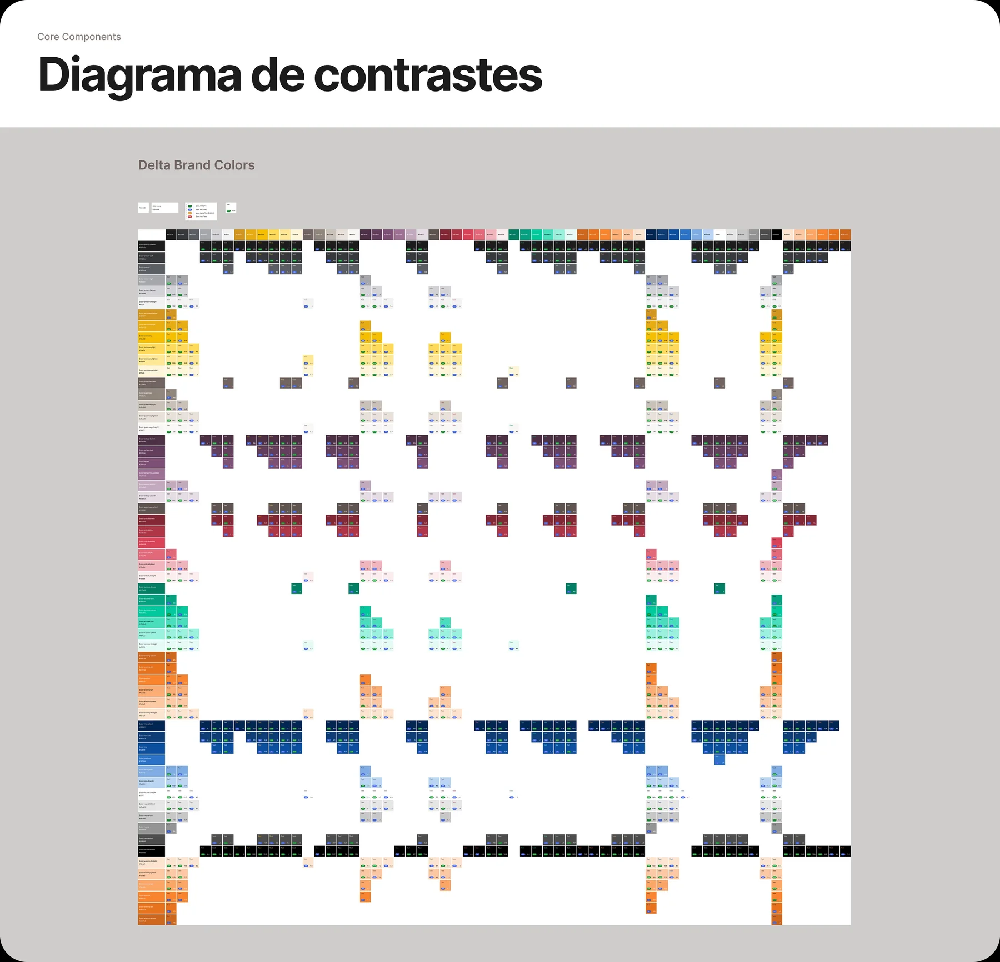
Validei manualmente cada combinação de cor do sistema contra WCAG AA. Cada célula é uma decisão de acessibilidade documentada.
Toda decisão visual do Delta passa por uma camada de tokens semânticos. Opacidade, sombra, tipografia e bordas não são valores soltos no código: são primitivas nomeadas, documentadas e consumidas por código, mantendo coerência sem amarrar liberdade criativa de cada marca.
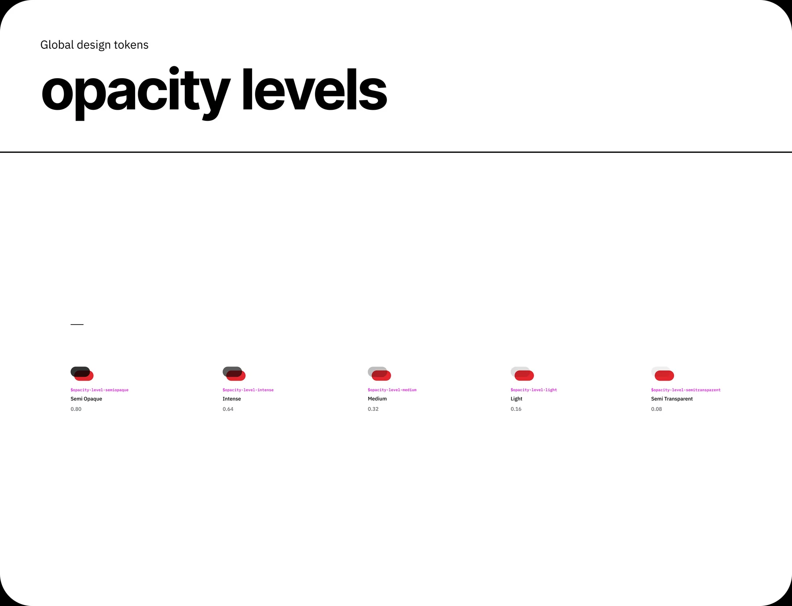
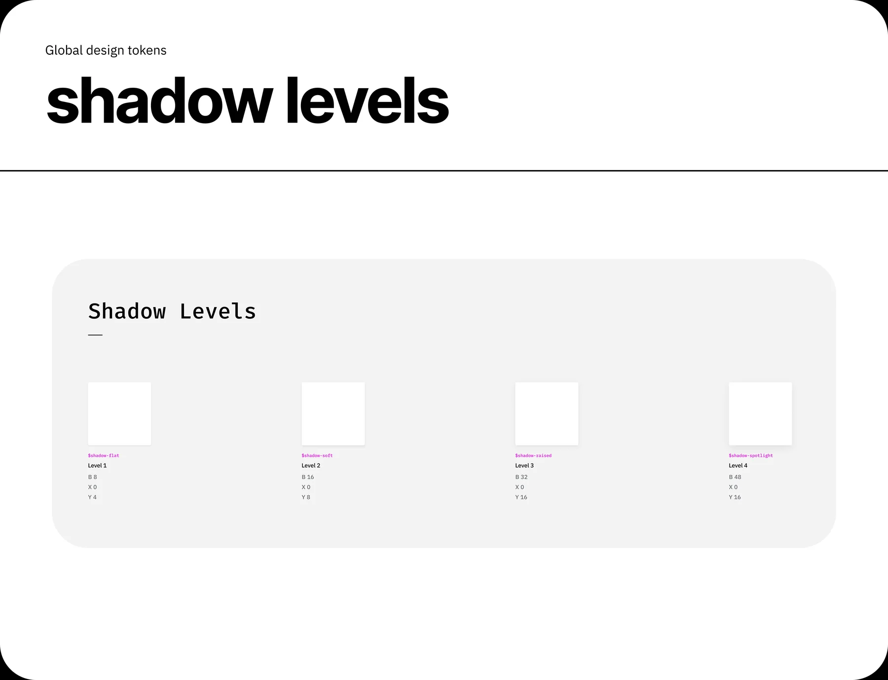
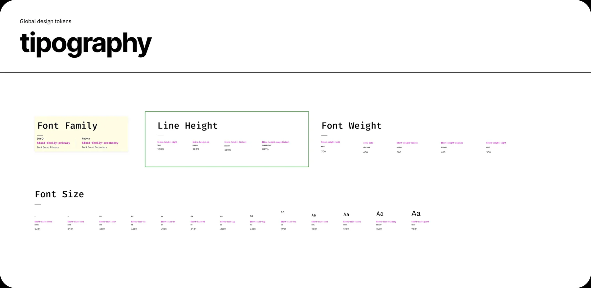
32 tons. 8 famílias. Construí a paleta inteira do Delta: brand (primary, secondary, neutral, tertiary) e feedback (critical, success, warning, info). Cada família com 6 níveis e tokens semânticos, prontos para alimentar qualquer marca da Escale via injeção de variáveis.
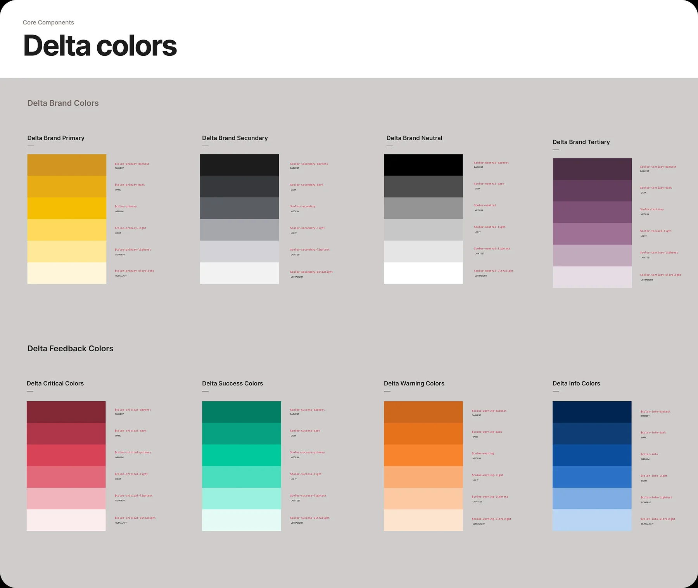
Desenhei o protocolo de entrega para garantir paridade total entre Figma e React. Documentei a anatomia, os estados de comportamento e as regras de acessibilidade como especificação técnica, não como sugestão visual.
Documentação como contrato: não apenas pixel-perfect, mas anatomia lógica.
Redução de ambiguidade: nada chega no dev sem estar mapeado e tokenizado.
Desenhei e documentei toda a família de buttons (primary, secondary, tertiary) em 3 tamanhos e 6 estados, cada um com light e dark mode, fill e outlined. A mesma metodologia de anatomia se estende a todos os componentes do sistema.
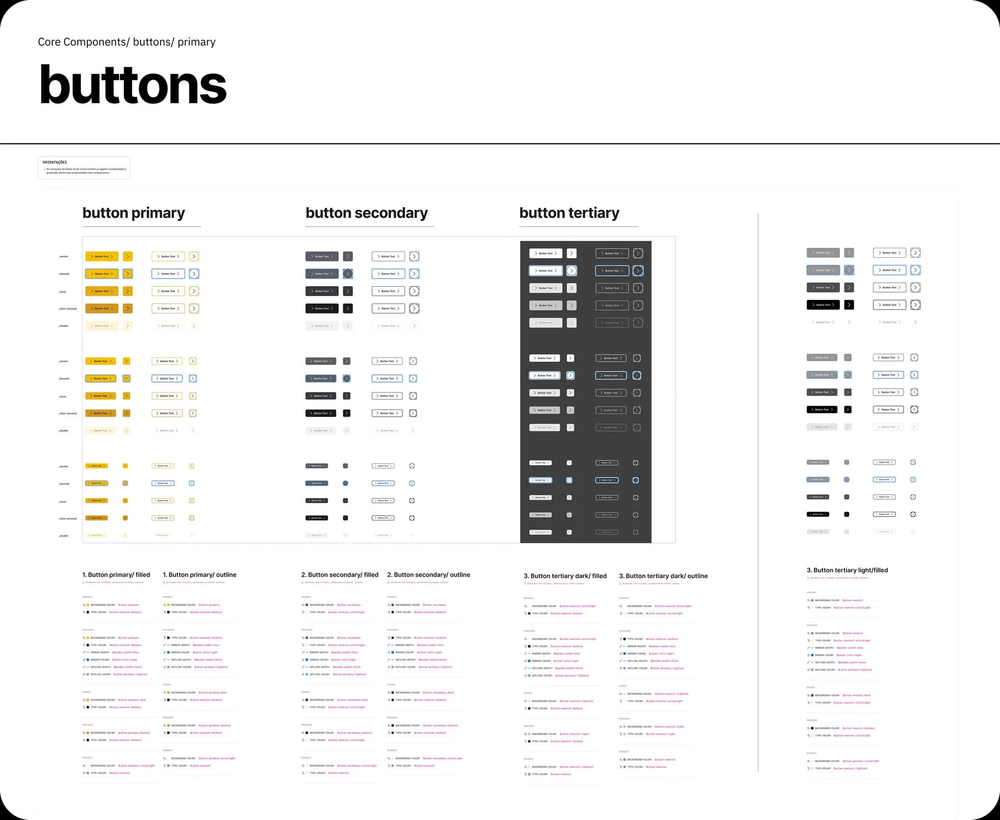
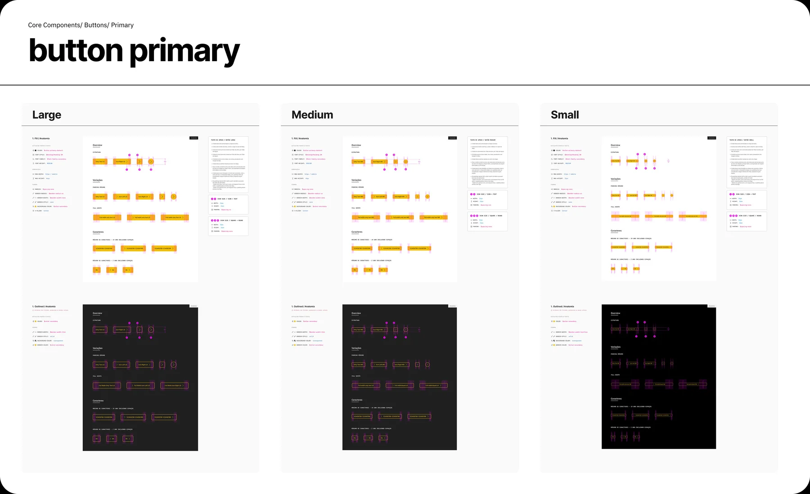
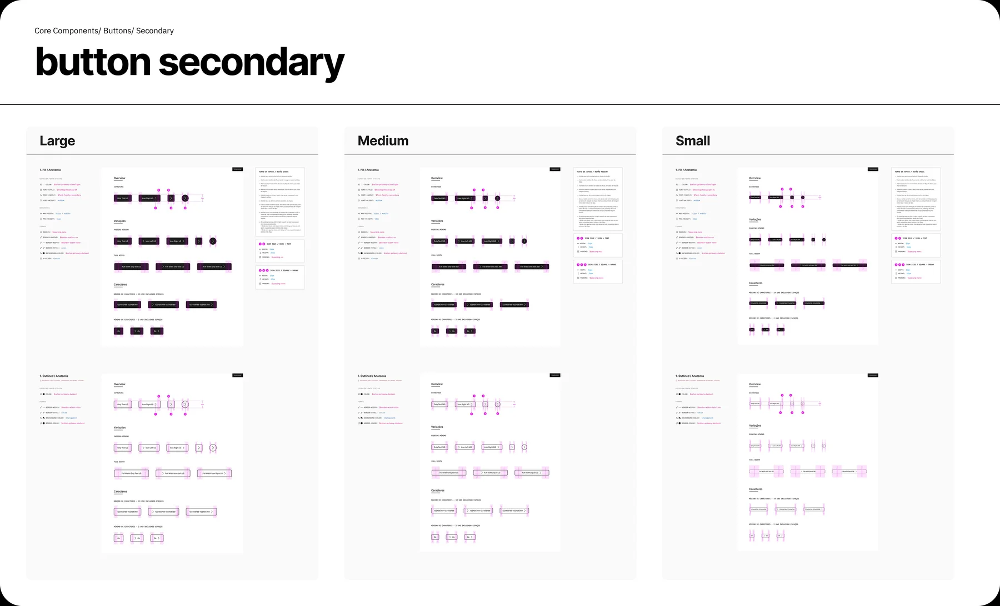
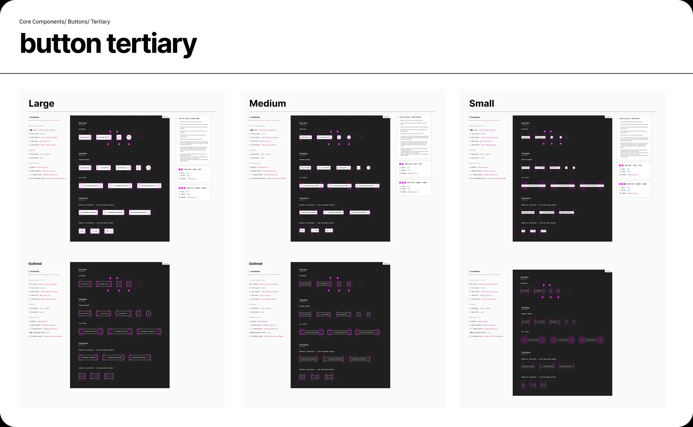
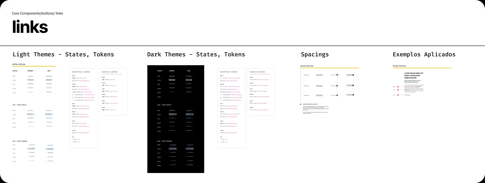
O Delta é consumido pelo time de Engenharia em produção desde 2020 através de um Storybook público. Cada componente vem com props, tokens, controles interativos e ciclo de depreciação documentado.
Acessar Storybook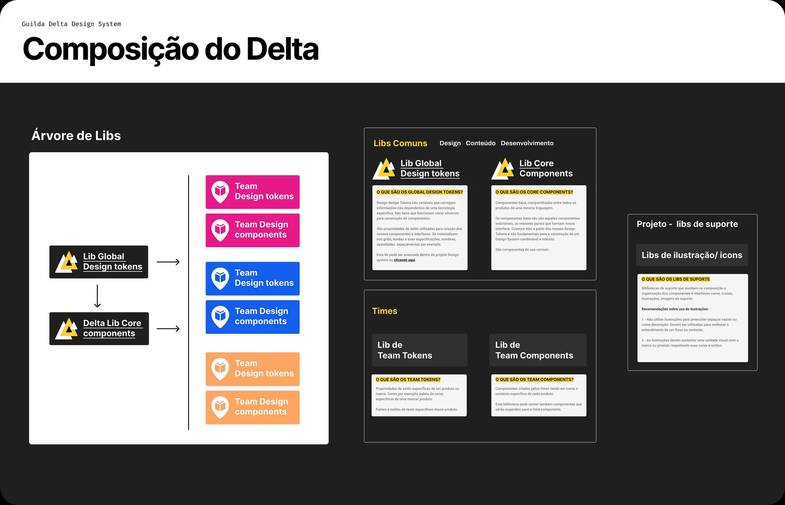
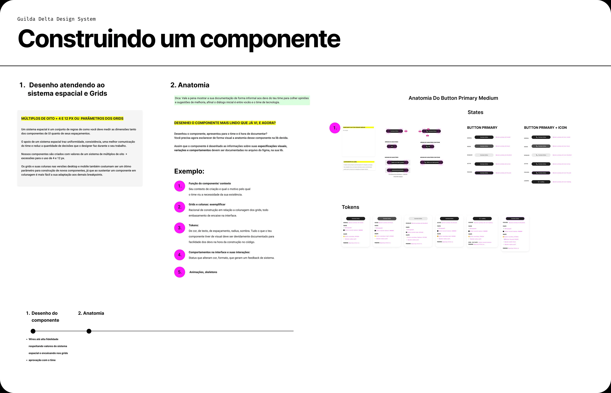